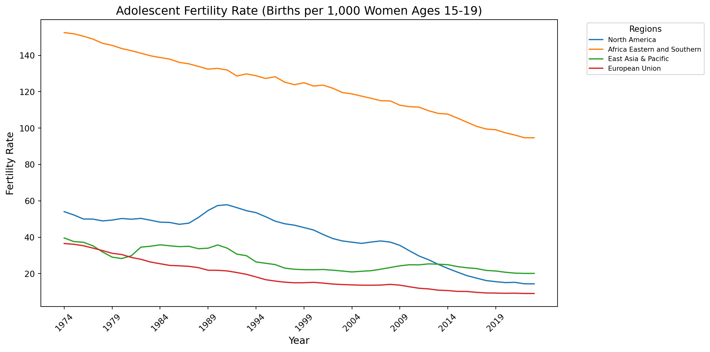
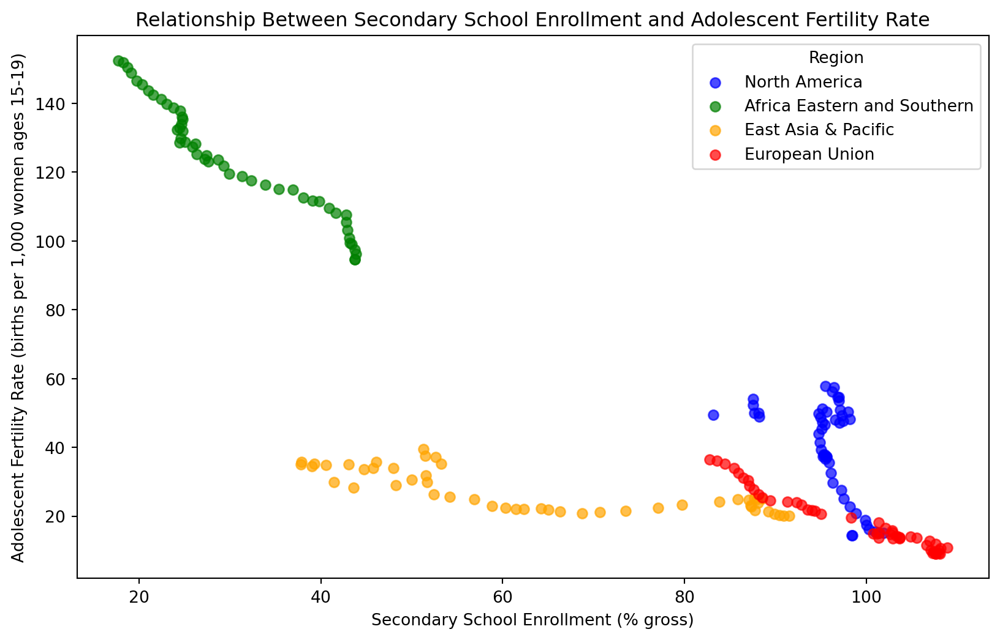
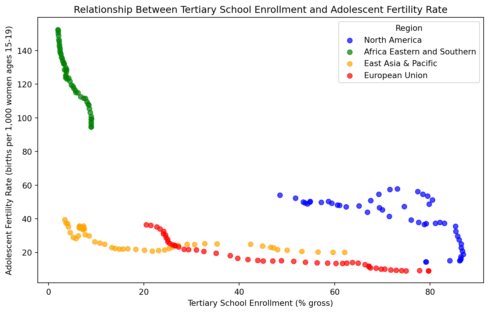
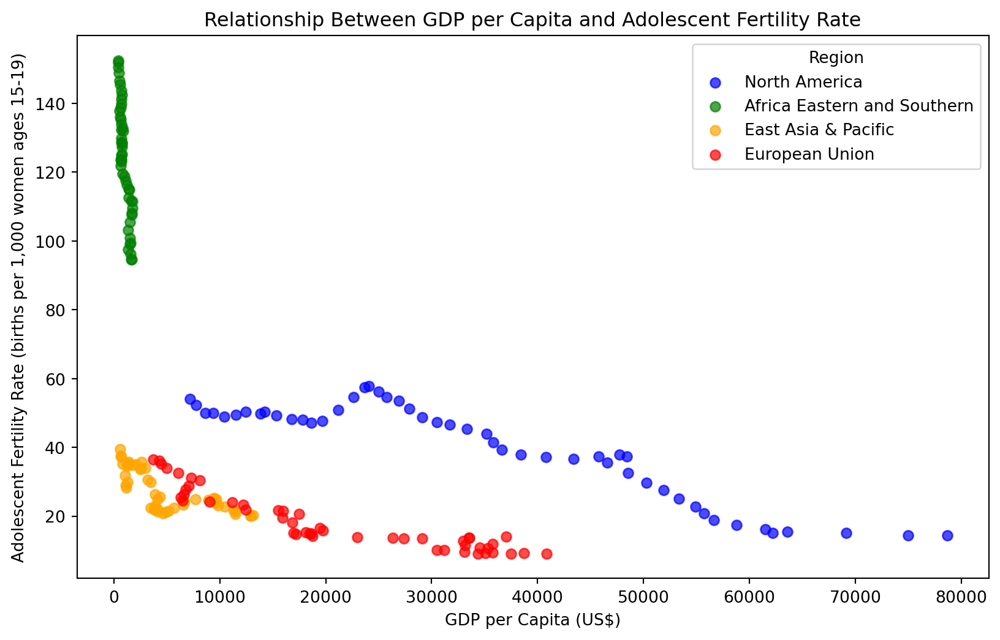
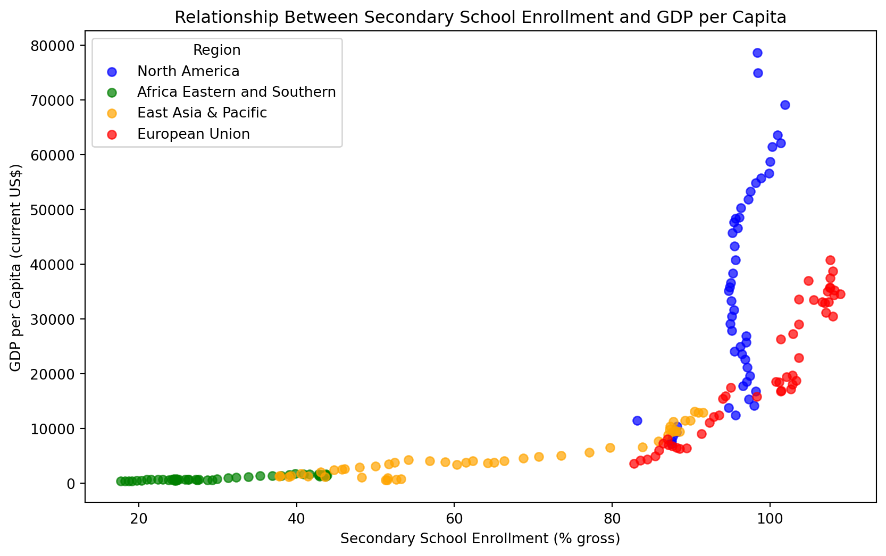
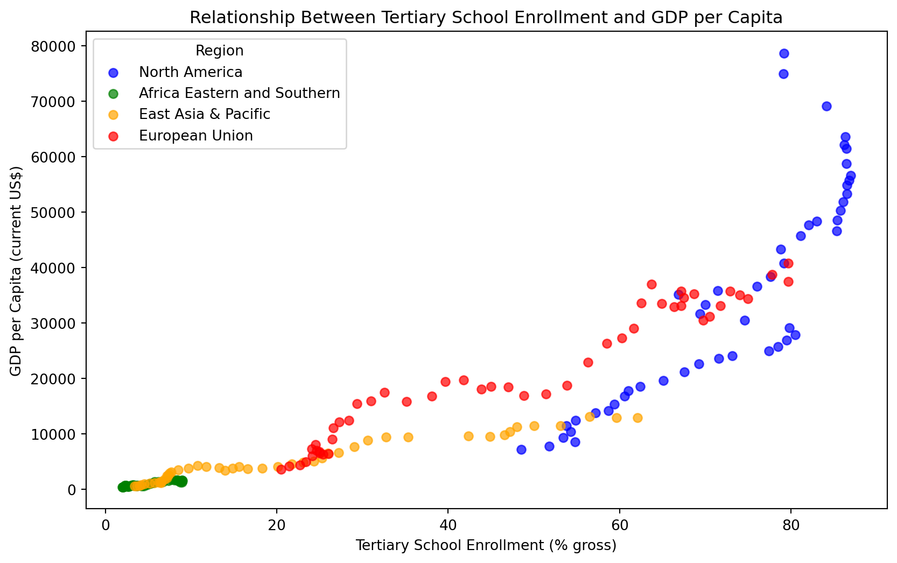
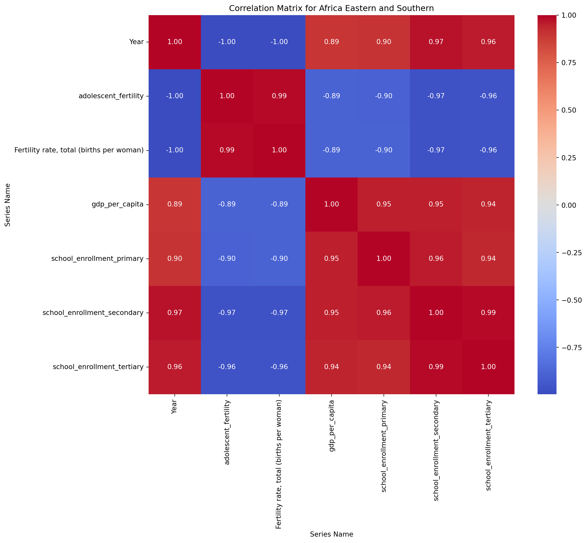
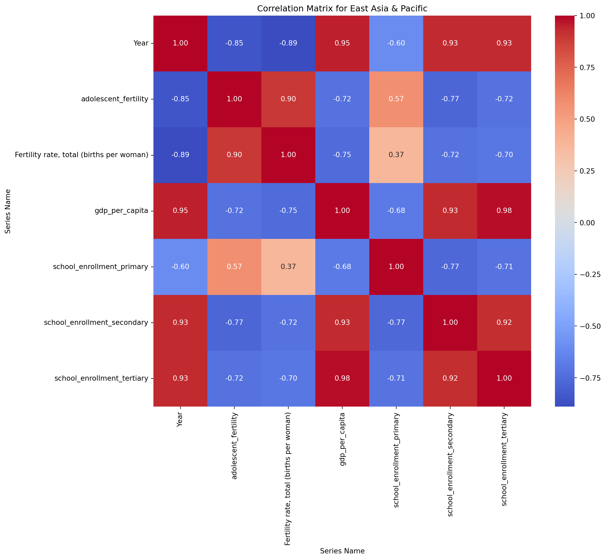
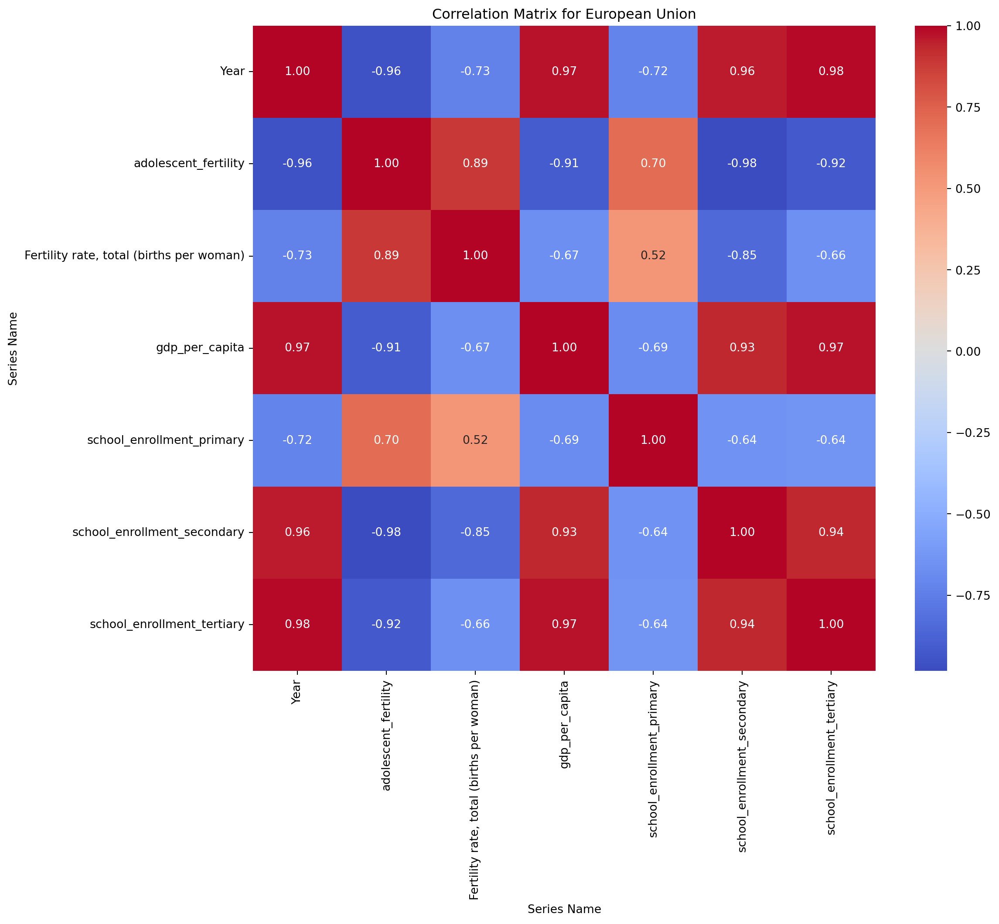
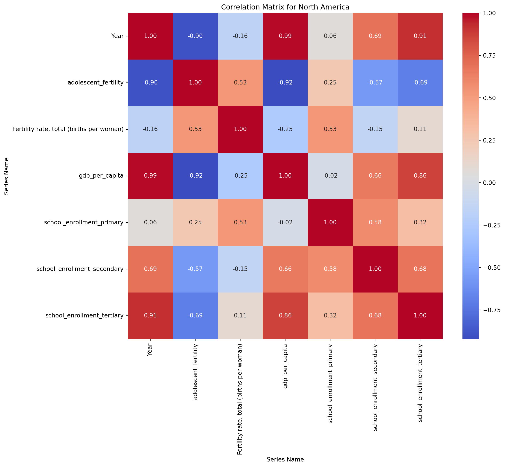

How Economic Development and Educational Attainment Impact Female Fertility Rate: A Regression Approach
Author
Amanda Yang (2512275), Caitlin Wei (2551023), Max Jiang (2547409), Angela Xie (2515217)
Published
December 8, 2024
Introduction
Female fertility rate is a vital indicator of societal development, reflecting not only population trends but also the economic, educational, and cultural contexts within a country. In today’s fast-paced, competitive world, women’s willingness and ability to give birth and raise children are profoundly influenced by advancements in economic development and educational attainment. Investigating these factors provides crucial insights into how nations can balance their growth trajectories with population stability, gender equity, and cultural sustainability.
This research explores the relationship between economic development, educational achievement, and female fertility rates, focusing on two key indicators: adolescent fertility (ages 15-19) and total fertility rate (births per woman). These metrics serve as proxies for women’s reproductive decisions and societal attitudes towards childbearing. On the other hand, GDP per capita and school enrollment rates at the primary, secondary, and tertiary levels represent key dimensions of economic and educational progress.
Using data from the World Bank, our group aims to construct a multivariable regression model to examine how economic development and educational attainment influence fertility rates across countries in four world regions: Eastern and Southern Africa, North America, East Asia & Pacific, and the European Union. In this model, GDP per capita and school enrollment at all levels will serve as explanatory variables, while adolescent fertility and total fertility rates will be the dependent variables. This approach will allow us to quantify the extent to which economic prosperity and education drive changes in fertility patterns globally.
Insights from this study is critical for policymakers, as fertility rates affect labor markets, public health, and long-term demographic trends. This research contributes to a deeper understanding of how societies can navigate the challenges of development while supporting women’s empowerment and well-being.
Data Description
We selected six variables from the World Bank open database: Adolescent fertility rate (births per 1,000 women ages 15-19), Fertility rate, total (births per woman), School enrollment, tertiary (% gross), School enrollment, secondary (% gross), School enrollment, primary (% gross), and GDP per capita (current US$).
Adolescent Fertility Rate
Adolescent fertility rate is the number of births per 1,000 women aged 15-19, providing a critical indicator of reproductive health and societal factors influencing early childbearing. Derived from vital registration systems, censuses, or surveys, it reflects access to education, contraception, and healthcare, with implications for maternal and child well-being in developing and developed regions.
Fertility Rate, Total
Total fertility rate represents the average number of children a woman would bear during her lifetime if age-specific fertility rates remained constant. It is derived from vital registration systems, censuses, or surveys and reflects societal factors influencing reproduction, including economic conditions, healthcare, and women’s access to education and family planning.
Tertiary School Enrollment
Female tertiary school enrollment (% gross) measures the gross enrollment ratio of female students in tertiary education as a percentage of the relevant age group population. Tertiary education generally encompasses programs beyond secondary school and may or may not lead to advanced research qualifications. Admission typically requires completing secondary education as a prerequisite. This indicator reflects women’s access to higher education and is shaped by educational policies, cultural values, and economic factors. Data is standardized using UNESCO methodologies.
Secondary School Enrollment
School Enrollment, Secondary, Female (% gross) measures the total female enrollment in secondary education as a percentage of the population of the age group officially corresponding to that education level. Secondary education completes the provision of basic education that began at the primary level, and aims at laying the foundations for lifelong learning and human development, by offering more subject- or skill-oriented instruction using more specialized teachers. Data is standardized using UNESCO methodologies.
Primary School Enrollment
School Enrollment, Primary, Female (% gross) measures the gross enrollment ratio of female students in primary education as a percentage of the relevant age group population. Primary education provides children with basic reading, writing, and mathematics skills along with an elementary understanding of such subjects as history, geography, natural science, social science, art, and music. Data is standardized using UNESCO methodologies.
GDP Per Capita
GDP per capita is calculated by dividing the gross domestic product (GDP) by the midyear population. GDP represents the total gross value added by all resident producers in the economy, including product taxes, and excluding subsidies not factored into product values. It does not account for depreciation of manufactured assets or the depletion and degradation of natural resources. The data are expressed in current U.S. dollars.
Data Analysis
Data Cleaning
We used both SQL and Python in our data cleaning process.
# This is quoted code and won't runimport pandas as pdimport pandas as pdcsv_file ='/Users/yangziyu/Desktop/QTM 350/final_project/qtm350-final-project/data/WBData.csv'df = pd.read_csv(csv_file)create_table ="CREATE TABLE wb_data (\n"for col in df.columns: col_name = col.replace(" ", "_").replace("[", "").replace("]", "").replace(".", "_") dtype ="REAL"if pd.api.types.is_numeric_dtype(df[col]) else"TEXT" create_table +=f" {col_name}{dtype},\n"create_table = create_table.rstrip(",\n") +"\n);"insert_statements = []for _, row in df.iterrows(): values =", ".join([f"'{x}'"if pd.notna(x) else"NULL"for x in row]) insert_statements.append(f"INSERT INTO wb_data VALUES ({values});")sql_script = create_table +"\n\n"+"\n".join(insert_statements)withopen("wb_data.sql", "w") as f: f.write(sql_script)print("SQL script saved to wb_data.sql")```python# This is quoted code and won't runimport dask.datasetsimport dask.dataframe as ddfrom dask_sql import Contextc = Context()df = dd.read_csv("/Users/maxjiang/Desktop/WBData.csv")c.create_table("wb_data", df)query ="SELECT * FROM wb_data"result = c.sql(query)```python# This is quoted code and won't runimport dask.dataframe as ddfrom dask_sql import Contextc = Context()df = dd.read_csv("/Users/maxjiang/Desktop/WBData.csv")c.create_table("wb_data", df)selected_columns = ["Country Name", "Series Name","1975 [YR1975]", "1976 [YR1976]", "2020 [YR2020]", "2021 [YR2021]", "2022 [YR2022]", "2023 [YR2023]"]filtered_df = df[selected_columns]filtered_df = filtered_df.rename( columns={"1974 [YR1974]": "Year1974","1975 [YR1975]": "Year1975","1976 [YR1976]": "Year1976","1977 [YR1977]": "Year1977","1978 [YR1978]": "Year1978","1979 [YR1979]": "Year1979","1980 [YR1980]": "Year1980","1981 [YR1981]": "Year1981","1982 [YR1982]": "Year1982","1983 [YR1983]": "Year1983","1984 [YR1984]": "Year1984","1985 [YR1985]": "Year1985","1986 [YR1986]": "Year1986","1987 [YR1987]": "Year1987","1988 [YR1988]": "Year1988","1989 [YR1989]": "Year1989","1990 [YR1990]": "Year1990","1991 [YR1991]": "Year1991","1992 [YR1992]": "Year1992","1993 [YR1993]": "Year1993","1994 [YR1994]": "Year1994","1995 [YR1995]": "Year1995","1996 [YR1996]": "Year1996","1997 [YR1997]": "Year1997","1998 [YR1998]": "Year1998","1999 [YR1999]": "Year1999","2000 [YR2000]": "Year2000","2001 [YR2001]": "Year2001","2002 [YR2002]": "Year2002","2003 [YR2003]": "Year2003","2004 [YR2004]": "Year2004","2005 [YR2005]": "Year2005","2006 [YR2006]": "Year2006","2007 [YR2007]": "Year2007","2008 [YR2008]": "Year2008","2009 [YR2009]": "Year2009","2010 [YR2010]": "Year2010","2011 [YR2011]": "Year2011","2012 [YR2012]": "Year2012","2013 [YR2013]": "Year2013","2014 [YR2014]": "Year2014","2015 [YR2015]": "Year2015","2016 [YR2016]": "Year2016","2017 [YR2017]": "Year2017","2018 [YR2018]": "Year2018","2019 [YR2019]": "Year2019","2020 [YR2020]": "Year2020","2021 [YR2021]": "Year2021","2022 [YR2022]": "Year2022","2023 [YR2023]": "Year2023", })filtered_df = filtered_df.replace("..", None)year_columns = ["Year1974", "Year1975", "Year1976", "Year1977", "Year1978", "Year1979", "Year1980", "Year1981", "Year1982", "Year1983", "Year1984", "Year1985", "Year1986", "Year1987", "Year1988", "Year1989", "Year1990", "Year1991", "Year1992", "Year1993", "Year1994", "Year1995", "Year1996", "Year1997", "Year1998", "Year1999", "Year2000", "Year2001", "Year2002", "Year2003", "Year2004", "Year2005", "Year2006", "Year2007", "Year2008", "Year2009", "Year2010", "Year2011", "Year2012", "Year2013", "Year2014", "Year2015", "Year2016", "Year2017", "Year2018", "Year2019", "Year2020", "Year2021", "Year2022", "Year2023"]numeric_cols = year_columnsfor i, col inenumerate(year_columns):if i >=2: prev1, prev2 = year_columns[i -1], year_columns[i -2] query =f""" UPDATE wb_data_cleaned SET `{col}` = COALESCE(`{col}`, (`{prev1}` + `{prev2}`) / 2) WHERE `{col}` IS NULL; """ c.sql(query)for col in year_columns: query =f""" UPDATE wb_data_cleaned SET `{col}` = COALESCE(`{col}`, (SELECT AVG(`{col}`) FROM wb_data_cleaned WHERE `{col}` IS NOT NULL)) WHERE `{col}` IS NULL; """ c.sql(query)categorical_columns = ["Country Name", "Series Name"]for col in categorical_columns: query =f""" UPDATE wb_data_cleaned SET `{col}` = COALESCE(`{col}`, (SELECT `{col}` FROM wb_data_cleaned GROUP BY `{col}` ORDER BY COUNT(*) DESC LIMIT 1)) WHERE `{col}` IS NULL; """ c.sql(query)for col in numeric_cols: filtered_df[col] = filtered_df[col].map_partitions(pd.to_numeric, errors='coerce')def fill_missing_values(df): df["Year2022"] = df["Year2022"].fillna((df["Year2020"] + df["Year2021"]) /2) df["Year2023"] = df["Year2023"].fillna((df["Year2021"] + df["Year2022"]) /2)return dffilled_df = filtered_df.map_partitions(fill_missing_values)c.create_table("wb_data_Further_cleaned", filled_df)filled_df.compute().to_csv("/Users/maxjiang/Desktop/WBData_Further_Cleaned.csv", index=False)```python#Improved Versionimport dask.dataframe as ddfrom dask_sql import Contextimport pandas as pdc = Context()df = dd.read_csv("/Users/maxjiang/Desktop/WBData.csv")c.create_table("wb_data", df)year_columns = [f"Year{year}"for year inrange(1970, 2020)]rename_mapping = {f"{year} [YR{year}]": f"Year{year}"for year inrange(1970, 2020)}rename_mapping.update({"Country Name": "CountryName", "Series Name": "SeriesName"})filtered_df = df.rename(columns=rename_mapping)filtered_df = filtered_df.replace("..", None)numeric_cols = year_columnsfor col in numeric_cols: filtered_df[col] = filtered_df[col].map_partitions(pd.to_numeric, errors='coerce')def fill_missing_values(df):for i, col inenumerate(year_columns):if i >=2: prev1, prev2 = year_columns[i -1], year_columns[i -2] df[col] = df[col].fillna((df[prev1] + df[prev2]) /2)return dffilled_df = filtered_df.map_partitions(fill_missing_values)for col in numeric_cols: query =f""" UPDATE wb_data_cleaned SET `{col}` = COALESCE(`{col}`, (SELECT AVG(`{col}`) FROM wb_data_cleaned WHERE `{col}` IS NOT NULL)) WHERE `{col}` IS NULL; """ c.sql(query)categorical_columns = ["CountryName", "SeriesName"]for col in categorical_columns: query =f""" UPDATE wb_data_cleaned SET `{col}` = COALESCE(`{col}`, (SELECT `{col}` FROM wb_data_cleaned GROUP BY `{col}` ORDER BY COUNT(*) DESC LIMIT 1)) WHERE `{col}` IS NULL; """ c.sql(query)filled_df.compute().to_csv("/Users/maxjiang/Desktop/WBData_Further_Cleaned.csv", index=False)```python#Final Check using Python'''correct_file_path = '/Users/maxjiang/Desktop/WBData.csv'data = pd.read_csv(correct_file_path)data.columns = [col.strip().replace(' [', '_').replace(']', '').replace('YR', 'Year') for col in data.columns]data.replace("..", pd.NA, inplace=True)for col in data.columns[5:]: # Assuming first 5 columns are non-numeric metadata data[col] = pd.to_numeric(data[col], errors='coerce')years = [col for col in data.columns if 'Year' in col]recent_years_average = data[years[-2:]].mean(axis=1, skipna=True)for col in years: data[col] = data[col].fillna(recent_years_average)output_corrected_path = '/Users/maxjiang/Desktop/WBData_Cleaned.csv'data.to_csv(output_corrected_path, index=False)for row_index in [8, 9]: # 9th and 10th rows (zero-based index) row_last_two = data.iloc[row_index][years[-2:]] if row_last_two.isnull().all(): overall_average = data.iloc[row_index][years].mean(skipna=True) data.loc[row_index, years[-2:]] = overall_averagedata.to_csv(output_corrected_path, index=False)updated_rows = data.iloc[[8, 9]][years[-2:]]updated_rowsrow_index = 8 row_last_two = data.iloc[row_index][years[-2:]]if row_last_two.isnull().all(): overall_average = data.iloc[row_index][years].mean(skipna=True) data.loc[row_index, years[-2:]] = overall_averagedata.to_csv(output_corrected_path, index=False)updated_ninth_row_last_two = data.iloc[row_index][years[-2:]]updated_ninth_row_last_twoprevious_two_years = years[-4:-2]previous_two_years_average = data.loc[row_index, previous_two_years].mean(skipna=True)data.loc[row_index, years[-2:]] = previous_two_years_averagedata.to_csv(output_corrected_path, index=False)corrected_ninth_row_last_two = data.loc[row_index, years[-2:]]corrected_ninth_row_last_twocolumns_to_remove = ['Series Code', 'Country Code']data.drop(columns=columns_to_remove, inplace=True, errors='ignore')data.columns = [col.split('_')[-1] if 'Year' in col else col for col in data.columns]output_further_cleaned_path = '/Users/maxjiang/Desktop/WBData_Further_Cleaned.csv'data.to_csv(output_further_cleaned_path, index=False)'''By completing the steps above, we have ensured that the dataset is clean, consistent, and ready for analysis. The careful handling of missing values and renaming of columns enhances both the usability and interpretability of the data. With a complete 50-year timespan and six well-defined variables, including fertility metrics and regional categorizations (Eastern and Southern Africa, North America, East Asia & Pacific, and the EU), the dataset provides a solid foundation for exploring meaningful patterns and conducting robust statistical analysis.## Summary Statistics### Summary Statistics By Region::: {#d90b9ba6 .cell execution_count=1}``` {.python .cell-code}import sqlite3import pandas as pd# Load the CSV file into a Pandas DataFramefile_path ="/Users/yangziyu/Desktop/QTM 350/final_project/qtm350-final-project/data/data_for_sql.csv"# Replace with your file pathdata = pd.read_csv(file_path)# Create an SQLite database (or connect to an existing one)conn = sqlite3.connect("data1.db") # Load the DataFrame into an SQL tabledata.to_sql("data_table", conn, if_exists="replace", index=False)# Verify the table contentquery ="SELECT * FROM data_table LIMIT 5;"sample_data = pd.read_sql_query(query, conn)print(sample_data.head())
Region Year adolescent_fertility \
0 Africa Eastern and Southern 1974 152.504673
1 Africa Eastern and Southern 1975 151.867914
2 Africa Eastern and Southern 1976 150.533609
3 Africa Eastern and Southern 1977 148.931096
4 Africa Eastern and Southern 1978 146.644103
Fertility rate, total (births per woman) gdp_per_capita \
0 6.820429 421.977185
1 6.805172 435.977902
2 6.785995 430.261244
3 6.767943 468.301007
4 6.750403 509.479882
school_enrollment_primary school_enrollment_secondary \
0 65.155342 17.703409
1 67.497803 18.236691
2 68.989937 18.696880
3 70.836258 19.130159
4 71.924622 19.723339
school_enrollment_tertiary
0 1.95049
1 1.99506
2 2.02551
3 2.05232
4 2.12988
:::
query1 ="""SELECT "Region", COUNT("adolescent_fertility") AS count_observations, AVG("adolescent_fertility") AS avg_adolescent_fertility, MIN("adolescent_fertility") AS min_adolescent_fertility, MAX("adolescent_fertility") AS max_adolescent_fertility, AVG("gdp_per_capita") AS avg_gdp_per_capita, AVG("school_enrollment_primary") AS avg_primary_enrollment, AVG("school_enrollment_secondary") AS avg_secondary_enrollment, AVG("school_enrollment_tertiary") AS avg_tertiary_enrollmentFROM data_tableGROUP BY "Region";"""# Execute the query and fetch resultssummary_stats = pd.read_sql_query(query1, conn)summary_stats
Region
count_observations
avg_adolescent_fertility
min_adolescent_fertility
max_adolescent_fertility
avg_gdp_per_capita
avg_primary_enrollment
avg_secondary_enrollment
avg_tertiary_enrollment
0
Africa Eastern and Southern
50
123.659179
94.688181
152.504673
989.952961
86.117031
30.448847
4.896809
1
East Asia & Pacific
50
27.250583
20.101836
39.598045
5103.408136
108.536252
64.249117
21.045803
2
European Union
50
18.515741
9.066463
36.541219
20890.010973
102.800165
98.799087
47.379110
3
North America
50
39.815799
14.375896
57.855551
35286.638374
100.923277
95.774863
73.226633
Based on the summary statistics above, we can see that Africa Eastern and Southern generally have higher adolescent fertility, lower gdp per capital and education enrollment compared to other regions.
Trend of Female Fertility Rate by Year
query2 ="""SELECT "Year", AVG("adolescent_fertility") AS avg_adolescent_fertilityFROM data_tableGROUP BY "Year"ORDER BY avg_adolescent_fertility ASC;"""# Execute the query and fetch resultssummary_stats1 = pd.read_sql_query(query2, conn)summary_stats1
Year
avg_adolescent_fertility
0
2022
34.558094
1
2023
34.558094
2
2021
35.210953
3
2020
35.593976
4
2019
36.338364
5
2018
36.693597
6
2017
37.727974
7
2016
38.864585
8
2015
40.097494
9
2014
41.525873
10
2013
42.311942
11
2012
43.514744
12
2011
44.491732
13
2010
45.478098
14
2009
46.511333
15
2006
47.238232
16
2005
47.274225
17
2007
47.274647
18
2008
47.421004
19
2004
47.696507
20
2003
48.225742
21
2002
49.334682
22
2001
50.536227
23
2000
51.100895
24
1999
51.845482
25
1998
51.954309
26
1997
52.734165
27
1996
54.478990
28
1995
55.227043
29
1994
56.726343
30
1993
58.459834
31
1992
59.049802
32
1988
60.434924
33
1987
60.516948
34
1986
60.584687
35
1989
60.730916
36
1991
61.307059
37
1985
61.467961
38
1990
61.952906
39
1984
62.074267
40
1983
62.629157
41
1981
62.792716
42
1980
63.200984
43
1982
63.486551
44
1979
63.783899
45
1978
65.039899
46
1977
67.047197
47
1976
68.273405
48
1975
69.465068
49
1974
70.672741
The adolescent_fertility generally descrease over time on average.
GDP Growth by Region
query3 ="""SELECT "Region", AVG("gdp_per_capita") AS avg_gdp_per_capita, MAX("gdp_per_capita") - MIN("gdp_per_capita") AS gdp_growthFROM data_tableGROUP BY "Region"ORDER BY gdp_growth DESC;"""# Execute the query and fetch resultssummary_stats2 = pd.read_sql_query(query3, conn)summary_stats2
Region
avg_gdp_per_capita
gdp_growth
0
North America
35286.638374
71466.380836
1
European Union
20890.010973
37143.177577
2
East Asia & Pacific
5103.408136
12529.099105
3
Africa Eastern and Southern
989.952961
1336.021219
The findings highlight significant economic disparities, with North America and the European Union leading in GDP per capita and growth, while Africa Eastern and Southern lags far behind.
Data Visualization
# Import necessary librariesimport pandas as pdimport matplotlib.pyplot as plt# Load the datasetfile_path ="/Users/yangziyu/Desktop/QTM 350/final_project/qtm350-final-project/data/WBData_Further_Cleaned.csv"data = pd.read_csv(file_path)
filtered_data = data[data['Series Name'] =='Adolescent fertility rate (births per 1,000 women ages 15-19)']# Prepare the data for plottingfiltered_data = filtered_data.drop(columns=['Series Name']).set_index('Country Name').Tfiltered_data.index = filtered_data.index.str.replace('Year', '') # Simplify year labels# Plot the dataplt.figure(figsize=(12, 6))for country in filtered_data.columns: plt.plot(filtered_data.index, filtered_data[country], label=country)plt.title('Adolescent Fertility Rate (Births per 1,000 Women Ages 15-19)', fontsize=14)plt.xlabel('Year', fontsize=12)plt.ylabel('Fertility Rate', fontsize=12)plt.legend(title='Regions', bbox_to_anchor=(1.05, 1), loc='upper left', fontsize=8)# Customize ticks and gridplt.xticks(ticks=filtered_data.index[::5], rotation=45) # Show every 5th yearplt.grid(False) plt.tight_layout()plt.show()

Figure 1: Line Plot showing the adolescent fertility rate from 1974 to 2019
Figure 1 illustrates trends in adolescent fertility rates (births per 1,000 women aged 15-19) across regions from 1974 to 2019: 1. Africa Eastern and Southern consistently shows the highest fertility rates, but there has been a steady decline over time. 2. North America has experienced fluctuations but maintains moderate levels of adolescent fertility compared to other regions. 3. East Asia & Pacific and the European Union have the lowest adolescent fertility rates, showing significant declines and stabilizing at minimal levels over the years.
# Reshape the data to include all yearsmelted_data = data.melt(id_vars=["Country Name", "Series Name"], var_name="Year", value_name="Value")# Filter relevant data for fertility rate and secondary school enrollmentfertility_data = melted_data[melted_data["Series Name"] =="Adolescent fertility rate (births per 1,000 women ages 15-19)"]secondary_data = melted_data[melted_data["Series Name"] =="School enrollment, secondary (% gross)"]# Merge datasets and clean upmerged_data = ( pd.merge(fertility_data, secondary_data, on=["Country Name", "Year"], suffixes=("_Fertility", "_Secondary")))# Map regions and assign colorsregion_colors = {"North America": "blue","Africa Eastern and Southern": "green","East Asia & Pacific": "orange","European Union": "red"}merged_data["Color"] = merged_data["Country Name"].map(region_colors)# Plot the scatter plotplt.figure(figsize=(10, 6))for region, color in region_colors.items(): group = merged_data[merged_data["Color"] == color] plt.scatter(group["Value_Secondary"], group["Value_Fertility"], label=region, color=color, alpha=0.7)plt.title("Relationship Between Secondary School Enrollment and Adolescent Fertility Rate")plt.xlabel("Secondary School Enrollment (% gross)")plt.ylabel("Adolescent Fertility Rate (births per 1,000 women ages 15-19)")plt.legend(title="Region")plt.grid(False)plt.show()

Figure 2: Scatterplot showing the relationship between secondary school enrollment and adolescent fertility rate
Figure 2 shows an obvious negative correlation between secondary school enrollment and adolescent fertility rate.
# Filter relevant data for fertility rate and tertiary school enrollmenttertiary_data = melted_data[melted_data["Series Name"] =="School enrollment, tertiary (% gross)"]# Merge datasets and clean upmerged_data = ( pd.merge(fertility_data, tertiary_data, on=["Country Name", "Year"], suffixes=("_Fertility", "_Tertiary")) .dropna(subset=["Value_Fertility", "Value_Tertiary"]))# Map regions and assign colorsregion_colors = {"North America": "blue","Africa Eastern and Southern": "green","East Asia & Pacific": "orange","European Union": "red"}merged_data["Color"] = merged_data["Country Name"].map(region_colors)# Plot the scatter plotplt.figure(figsize=(10, 6))for region, color in region_colors.items(): group = merged_data[merged_data["Color"] == color] plt.scatter(group["Value_Tertiary"], group["Value_Fertility"], label=region, color=color, alpha=0.7)plt.title("Relationship Between Tertiary School Enrollment and Adolescent Fertility Rate")plt.xlabel("Tertiary School Enrollment (% gross)")plt.ylabel("Adolescent Fertility Rate (births per 1,000 women ages 15-19)")plt.legend(title="Region")plt.grid(False)plt.show()

Figure 3: Scatterplot showing the Relationship Between Tertiary School Enrollment and Adolescent Fertility Rate
Figure 3 shows the relationship between tertiary school enrollment and adolescent fertility rate. The graph shows an obvious negative correlation between tertiary school enrollment and adolescent fertility rate; and compared to the previous graph of secondary education, the slope is steeper.
# Filter relevant data for adolescent fertility and GDP per capitagdp_data = melted_data[melted_data["Series Name"] =="GDP per capita (current US$)"]# Merge datasets and clean upmerged_data = ( pd.merge(fertility_data, gdp_data, on=["Country Name", "Year"], suffixes=("_Fertility", "_GDP")) .dropna(subset=["Value_Fertility", "Value_GDP"]))# Map regions and assign colorsregion_colors = {"North America": "blue","Africa Eastern and Southern": "green","East Asia & Pacific": "orange","European Union": "red"}merged_data["Color"] = merged_data["Country Name"].map(region_colors)# Plot the scatter plotplt.figure(figsize=(10, 6))for region, color in region_colors.items(): group = merged_data[merged_data["Color"] == color] plt.scatter(group["Value_GDP"], group["Value_Fertility"], label=region, color=color, alpha=0.7)plt.title("Relationship Between GDP per Capita and Adolescent Fertility Rate")plt.xlabel("GDP per Capita (US$)")plt.ylabel("Adolescent Fertility Rate (births per 1,000 women ages 15-19)")plt.legend(title="Region")plt.grid(False)plt.show()

Figure 4: Scatterplot showing the Relationship Between GDP per Capita and Adolescent Fertility Rate
Figure 4 shows an obvious negative correlation between GDP per capita and adolescent fertility rate; and compared to the previous graphs, the slope is the steepest.
# Filter relevant data for GDP per capita, secondary, and tertiary school enrollmentgdp_data = melted_data[melted_data["Series Name"] =="GDP per capita (current US$)"]secondary_data = melted_data[melted_data["Series Name"] =="School enrollment, secondary (% gross)"]tertiary_data = melted_data[melted_data["Series Name"] =="School enrollment, tertiary (% gross)"]# Merge GDP with secondary school enrollmentmerged_secondary = pd.merge(gdp_data, secondary_data, on=["Country Name", "Year"], suffixes=("_GDP", "_Secondary"))# Merge GDP with tertiary school enrollmentmerged_tertiary = pd.merge(gdp_data, tertiary_data, on=["Country Name", "Year"], suffixes=("_GDP", "_Tertiary"))# Define regions and assign colors (example mapping, adjust as necessary)region_colors = {"North America": "blue","Africa Eastern and Southern": "green","East Asia & Pacific": "orange","European Union": "red"}# Map colors to regionsmerged_secondary["Color"] = merged_secondary["Country Name"].map(region_colors)merged_tertiary["Color"] = merged_tertiary["Country Name"].map(region_colors)# Plot for secondary school enrollmentplt.figure(figsize=(10, 6))for region, color in region_colors.items(): group = merged_secondary[merged_secondary["Color"] == color] plt.scatter(group["Value_Secondary"], group["Value_GDP"], label=region, color=color, alpha=0.7)plt.title("Relationship Between Secondary School Enrollment and GDP per Capita")plt.xlabel("Secondary School Enrollment (% gross)")plt.ylabel("GDP per Capita (current US$)")plt.legend(title="Region")plt.grid(False)plt.show()

Figure 5: Scatterplot showing the Relationship Between Secondary School Enrollment and GDP per Capita
Figure 5 demonstrates a positive relationship between secondary school enrollment (% gross) and GDP per capita across regions. Countries with higher secondary school enrollment tend to have higher GDP per capita, with distinct clustering patterns by region. North America and the European Union show the highest GDP per capita with high enrollment rates, while Africa exhibits lower GDP levels despite varying enrollment percentages.
# Plot for tertiary school enrollmentplt.figure(figsize=(10, 6))for region, color in region_colors.items(): group = merged_tertiary[merged_tertiary["Color"] == color] plt.scatter(group["Value_Tertiary"], group["Value_GDP"], label=region, color=color, alpha=0.7)plt.title("Relationship Between Tertiary School Enrollment and GDP per Capita")plt.xlabel("Tertiary School Enrollment (% gross)")plt.ylabel("GDP per Capita (current US$)")plt.legend(title="Region")plt.grid(False)plt.show()

Figure 6: Scatterplot showing the Relationship Between Tertiary School Enrollment and GDP per Capita
Figure 6 highlights a positive correlation between tertiary school enrollment (% gross) and GDP per capita. Regions such as North America and the European Union exhibit high GDP per capita alongside higher tertiary enrollment rates, indicating the potential influence of advanced education on economic prosperity. Conversely, regions like Africa show lower GDP per capita and tertiary enrollment, suggesting gaps in higher education access and economic outcomes.
Regression Analysis
Rename and Reshape dataset
# import necessary packages and datasetimport pandas as pdimport numpy as npimport matplotlib.pyplot as pltimport seaborn as snsimport statsmodels.api as smimport statsmodels.formula.api as smfimport scipy.stats as statsfrom stargazer.stargazer import Stargazerfrom IPython.core.display import HTML
# use relative paths to increase reproducibilitydata = pd.read_csv("/Users/yangziyu/Desktop/QTM 350/final_project/qtm350-final-project/data/WBData_Further_Cleaned.csv" )
# Rename "Country Name" to "Region"data.rename(columns={"Country Name": "Region"}, inplace=True)# Reshape the dataset to a long formatdata_long = data.melt(id_vars=["Region", "Series Name"], var_name="Year", value_name="Value")
# Inspect the datasetdata_long.head(5)
Region
Series Name
Year
Value
0
North America
Adolescent fertility rate (births per 1,000 wo...
Year1974
54.047027
1
North America
Fertility rate, total (births per woman)
Year1974
1.835234
2
North America
School enrollment, tertiary (% gross)
Year1974
48.543449
3
North America
School enrollment, secondary (% gross)
Year1974
87.572639
4
North America
School enrollment, primary (% gross)
Year1974
95.018700
# Clean the Year columndata_long['Year'] = data_long['Year'].str.extract('(\d+)').astype(int)# Pivot to create a clean dataset for analysisanalysis_data = data_long.pivot_table(index=["Region", "Year"], columns="Series Name", values="Value").reset_index()analysis_data.rename(columns={"Adolescent fertility rate (births per 1,000 women ages 15-19)": "adolescent_fertility","GDP per capita (current US$)": "gdp_per_capita","School enrollment, primary (% gross)": "school_enrollment_primary","School enrollment, secondary (% gross)": "school_enrollment_secondary","School enrollment, tertiary (% gross)": "school_enrollment_tertiary"}, inplace=True)
Correlation Analysis
In this part, we generate the correlation matrices for all variables in four regions.
import seaborn as snsimport matplotlib.pyplot as plt# Get the unique regionsregions = analysis_data['Region'].unique()# Loop through each region and calculate the correlation matrixfor region in regions: region_data = analysis_data[analysis_data['Region'] == region] numeric_data = region_data.select_dtypes(include=[float, int]) correlation_matrix = numeric_data.corr()# Plot the heatmap plt.figure(figsize=(12, 10)) sns.heatmap(correlation_matrix, annot=True, cmap='coolwarm', fmt=".2f") plt.title(f"Correlation Matrix for {region}") plt.savefig(f"{region}_correlation_matrix.png") plt.show() # Close the plot to avoid overlapping




Findings:
The Role of Education: In all regions, higher secondary and tertiary school enrollments are strongly negatively correlated with adolescent fertility, which highlights the importance of advanced education in reducing teenage fertility rates.
Economic Influence: GDP per capita consistently shows a strong negative correlation with adolescent fertility rates, with wealthier regions tending to have lower adolescent fertility.
Regional Differences: Africa shows the strongest link between education and reduced fertility, while North America and East Asia show weaker correlations, indicating other factors may be at play.
Regression Analysis
OLS Regression before standardizing variables
We only include school_enrollment_secondary and tertiary since there is perfect multicollinearity within the school_enrollment category.
m1 = smf.ols(formula='adolescent_fertility ~ gdp_per_capita+ school_enrollment_secondary+school_enrollment_tertiary', data=analysis_data).fit()# add dummies region and yearm2 = smf.ols(formula='adolescent_fertility ~ gdp_per_capita + school_enrollment_secondary+school_enrollment_tertiary+C(Region)+C(Year)', data=analysis_data).fit()m2.summary()
OLS Regression Results
Dep. Variable:
adolescent_fertility
R-squared:
0.995
Model:
OLS
Adj. R-squared:
0.993
Method:
Least Squares
F-statistic:
502.7
Date:
Mon, 09 Dec 2024
Prob (F-statistic):
1.76e-141
Time:
18:08:17
Log-Likelihood:
-512.12
No. Observations:
200
AIC:
1136.
Df Residuals:
144
BIC:
1321.
Df Model:
55
Covariance Type:
nonrobust
coef
std err
t
P>|t|
[0.025
0.975]
Intercept
147.1038
2.190
67.184
0.000
142.776
151.432
C(Region)[T.East Asia & Pacific]
-108.1089
1.984
-54.502
0.000
-112.030
-104.188
C(Region)[T.European Union]
-133.3580
4.085
-32.647
0.000
-141.432
-125.284
C(Region)[T.North America]
-125.4724
4.295
-29.214
0.000
-133.962
-116.983
C(Year)[T.1975]
-1.8602
2.610
-0.713
0.477
-7.020
3.299
C(Year)[T.1976]
-3.7630
2.611
-1.441
0.152
-8.924
1.398
C(Year)[T.1977]
-4.9278
2.612
-1.886
0.061
-10.091
0.236
C(Year)[T.1978]
-7.1518
2.613
-2.737
0.007
-12.317
-1.987
C(Year)[T.1979]
-8.2173
2.612
-3.146
0.002
-13.380
-3.054
C(Year)[T.1980]
-9.2459
2.617
-3.533
0.001
-14.418
-4.074
C(Year)[T.1981]
-10.0428
2.616
-3.839
0.000
-15.213
-4.873
C(Year)[T.1982]
-9.6984
2.617
-3.705
0.000
-14.872
-4.525
C(Year)[T.1983]
-10.6243
2.618
-4.059
0.000
-15.798
-5.450
C(Year)[T.1984]
-11.4365
2.620
-4.365
0.000
-16.616
-6.257
C(Year)[T.1985]
-12.2202
2.623
-4.660
0.000
-17.404
-7.037
C(Year)[T.1986]
-13.4189
2.631
-5.101
0.000
-18.619
-8.219
C(Year)[T.1987]
-13.9575
2.641
-5.285
0.000
-19.178
-8.737
C(Year)[T.1988]
-14.4751
2.649
-5.464
0.000
-19.711
-9.239
C(Year)[T.1989]
-14.5984
2.654
-5.501
0.000
-19.843
-9.353
C(Year)[T.1990]
-13.7811
2.663
-5.176
0.000
-19.044
-8.518
C(Year)[T.1991]
-14.9258
2.669
-5.592
0.000
-20.201
-9.650
C(Year)[T.1992]
-18.0794
2.682
-6.742
0.000
-23.380
-12.779
C(Year)[T.1993]
-19.4731
2.696
-7.222
0.000
-24.802
-14.144
C(Year)[T.1994]
-22.0077
2.715
-8.107
0.000
-27.373
-16.642
C(Year)[T.1995]
-23.9605
2.730
-8.776
0.000
-29.357
-18.564
C(Year)[T.1996]
-25.0960
2.745
-9.142
0.000
-30.522
-19.670
C(Year)[T.1997]
-26.6556
2.752
-9.687
0.000
-32.094
-21.217
C(Year)[T.1998]
-26.9160
2.757
-9.764
0.000
-32.365
-21.467
C(Year)[T.1999]
-27.5346
2.768
-9.948
0.000
-33.005
-22.064
C(Year)[T.2000]
-28.2337
2.773
-10.180
0.000
-33.716
-22.752
C(Year)[T.2001]
-30.1111
2.792
-10.786
0.000
-35.629
-24.593
C(Year)[T.2002]
-32.6140
2.810
-11.606
0.000
-38.168
-27.060
C(Year)[T.2003]
-34.5024
2.844
-12.133
0.000
-40.123
-28.882
C(Year)[T.2004]
-35.7343
2.876
-12.424
0.000
-41.419
-30.049
C(Year)[T.2005]
-36.5688
2.912
-12.557
0.000
-42.325
-30.812
C(Year)[T.2006]
-37.3614
2.956
-12.640
0.000
-43.204
-31.519
C(Year)[T.2007]
-37.6682
3.016
-12.490
0.000
-43.629
-31.707
C(Year)[T.2008]
-37.9738
3.072
-12.361
0.000
-44.046
-31.902
C(Year)[T.2009]
-39.9337
3.083
-12.951
0.000
-46.028
-33.839
C(Year)[T.2010]
-41.5612
3.125
-13.300
0.000
-47.738
-35.385
C(Year)[T.2011]
-42.9045
3.173
-13.521
0.000
-49.177
-36.633
C(Year)[T.2012]
-44.3375
3.181
-13.940
0.000
-50.624
-38.051
C(Year)[T.2013]
-46.0675
3.223
-14.294
0.000
-52.438
-39.697
C(Year)[T.2014]
-48.0340
3.239
-14.830
0.000
-54.436
-41.632
C(Year)[T.2015]
-50.1660
3.221
-15.575
0.000
-56.532
-43.800
C(Year)[T.2016]
-51.7542
3.227
-16.036
0.000
-58.133
-45.375
C(Year)[T.2017]
-53.0040
3.258
-16.268
0.000
-59.444
-46.564
C(Year)[T.2018]
-54.1821
3.298
-16.426
0.000
-60.702
-47.662
C(Year)[T.2019]
-54.9807
3.321
-16.553
0.000
-61.546
-48.416
C(Year)[T.2020]
-56.4061
3.325
-16.966
0.000
-62.977
-49.835
C(Year)[T.2021]
-57.0683
3.408
-16.747
0.000
-63.804
-50.333
C(Year)[T.2022]
-57.5480
3.410
-16.876
0.000
-64.288
-50.808
C(Year)[T.2023]
-57.7344
3.457
-16.699
0.000
-64.568
-50.900
gdp_per_capita
-0.0001
5.04e-05
-2.067
0.041
-0.000
-4.54e-06
school_enrollment_secondary
0.0788
0.058
1.347
0.180
-0.037
0.194
school_enrollment_tertiary
0.5862
0.042
13.949
0.000
0.503
0.669
Omnibus:
4.037
Durbin-Watson:
0.172
Prob(Omnibus):
0.133
Jarque-Bera (JB):
2.651
Skew:
-0.079
Prob(JB):
0.266
Kurtosis:
2.458
Cond. No.
1.41e+06
Notes: [1] Standard Errors assume that the covariance matrix of the errors is correctly specified. [2] The condition number is large, 1.41e+06. This might indicate that there are strong multicollinearity or other numerical problems.
ms = Stargazer([m1,m2])HTML(ms.render_html())ms.title('Regression on Fertility')ms.custom_columns(['All','With Dummies'], [1, 1])HTML(ms.render_html())
Regression on Fertility
Dependent variable: adolescent_fertility
All
With Dummies
(1)
(2)
C(Region)[T.East Asia & Pacific]
-108.109***
(1.984)
C(Region)[T.European Union]
-133.358***
(4.085)
C(Region)[T.North America]
-125.472***
(4.295)
C(Year)[T.1975]
-1.860
(2.610)
C(Year)[T.1976]
-3.763
(2.611)
C(Year)[T.1977]
-4.928*
(2.612)
C(Year)[T.1978]
-7.152***
(2.613)
C(Year)[T.1979]
-8.217***
(2.612)
C(Year)[T.1980]
-9.246***
(2.617)
C(Year)[T.1981]
-10.043***
(2.616)
C(Year)[T.1982]
-9.698***
(2.617)
C(Year)[T.1983]
-10.624***
(2.618)
C(Year)[T.1984]
-11.437***
(2.620)
C(Year)[T.1985]
-12.220***
(2.623)
C(Year)[T.1986]
-13.419***
(2.631)
C(Year)[T.1987]
-13.957***
(2.641)
C(Year)[T.1988]
-14.475***
(2.649)
C(Year)[T.1989]
-14.598***
(2.654)
C(Year)[T.1990]
-13.781***
(2.663)
C(Year)[T.1991]
-14.926***
(2.669)
C(Year)[T.1992]
-18.079***
(2.682)
C(Year)[T.1993]
-19.473***
(2.696)
C(Year)[T.1994]
-22.008***
(2.715)
C(Year)[T.1995]
-23.961***
(2.730)
C(Year)[T.1996]
-25.096***
(2.745)
C(Year)[T.1997]
-26.656***
(2.752)
C(Year)[T.1998]
-26.916***
(2.757)
C(Year)[T.1999]
-27.535***
(2.768)
C(Year)[T.2000]
-28.234***
(2.773)
C(Year)[T.2001]
-30.111***
(2.792)
C(Year)[T.2002]
-32.614***
(2.810)
C(Year)[T.2003]
-34.502***
(2.844)
C(Year)[T.2004]
-35.734***
(2.876)
C(Year)[T.2005]
-36.569***
(2.912)
C(Year)[T.2006]
-37.361***
(2.956)
C(Year)[T.2007]
-37.668***
(3.016)
C(Year)[T.2008]
-37.974***
(3.072)
C(Year)[T.2009]
-39.934***
(3.083)
C(Year)[T.2010]
-41.561***
(3.125)
C(Year)[T.2011]
-42.905***
(3.173)
C(Year)[T.2012]
-44.337***
(3.181)
C(Year)[T.2013]
-46.067***
(3.223)
C(Year)[T.2014]
-48.034***
(3.239)
C(Year)[T.2015]
-50.166***
(3.221)
C(Year)[T.2016]
-51.754***
(3.227)
C(Year)[T.2017]
-53.004***
(3.258)
C(Year)[T.2018]
-54.182***
(3.298)
C(Year)[T.2019]
-54.981***
(3.321)
C(Year)[T.2020]
-56.406***
(3.325)
C(Year)[T.2021]
-57.068***
(3.408)
C(Year)[T.2022]
-57.548***
(3.410)
C(Year)[T.2023]
-57.734***
(3.457)
Intercept
162.126***
147.104***
(4.755)
(2.190)
gdp_per_capita
-0.001***
-0.000**
(0.000)
(0.000)
school_enrollment_secondary
-2.024***
0.079
(0.107)
(0.058)
school_enrollment_tertiary
1.362***
0.586***
(0.169)
(0.042)
Observations
200
200
R2
0.771
0.995
Adjusted R2
0.768
0.993
Residual Std. Error
21.017 (df=196)
3.691 (df=144)
F Statistic
220.400*** (df=3; 196)
502.698*** (df=55; 144)
Note:
*p<0.1; **p<0.05; ***p<0.01
Through runing the OLS regression, we find that due to the inconsistent scale of different variables, it is difficult to make comparison between regressors. Also, there is strong multicollinearity in our model. To address these problems, we standardize variables and use Ridge regression to compare with OLS regression. There might be too many dummy variables as well. So we create a different variable called year_grouped that classify them into decades.
Standardizing and refining dataset
# Step 1: Group years into decadesanalysis_data["Year_grouped"] = (analysis_data["Year"] //10) *10from sklearn.preprocessing import StandardScaler# Create a copy of the datasetscaled_data = analysis_data.copy()# Initialize the scalerscaler = StandardScaler()# Select numeric columns to scale, excluding 'Year' and 'Year_grouped'numeric_columns_to_scale = [ col for col in scaled_data.select_dtypes(include=['float64', 'int64']).columns if col notin ['Year', 'Year_grouped']]# Scale the selected numeric columnsscaled_data[numeric_columns_to_scale] = scaler.fit_transform(scaled_data[numeric_columns_to_scale])# Ensure 'Year' and 'Year_grouped' remain unscaledscaled_data['Year'] = analysis_data['Year']scaled_data['Year_grouped'] = analysis_data['Year_grouped']scaled_data['Region'] = analysis_data['Region']
# Step 2: Add dummy variables for 'Region' and the new 'Year_grouped' columndf = pd.get_dummies(scaled_data, columns=["Region", "Year_grouped"], drop_first=True)# Step 3: Replace boolean values (False -> 0, True -> 1) in the entire datasetdf = df.replace({False: 0, True: 1})# Step 4: Confirm the changesdf.head()
/var/folders/ht/cp5bzsp52ll5g4wdvrjntjmh0000gn/T/ipykernel_18825/1281065974.py:5: FutureWarning:
Downcasting behavior in `replace` is deprecated and will be removed in a future version. To retain the old behavior, explicitly call `result.infer_objects(copy=False)`. To opt-in to the future behavior, set `pd.set_option('future.no_silent_downcasting', True)`
Year
adolescent_fertility
Fertility rate, total (births per woman)
gdp_per_capita
school_enrollment_primary
school_enrollment_secondary
school_enrollment_tertiary
Region_East Asia & Pacific
Region_European Union
Region_North America
Year_grouped_1980
Year_grouped_1990
Year_grouped_2000
Year_grouped_2010
Year_grouped_2020
0
1974
2.302721
2.313122
-0.853996
-3.083716
-1.829018
-1.165587
0
0
0
0
0
0
0
0
1
1975
2.288087
2.304245
-0.853207
-2.873967
-1.811159
-1.164089
0
0
0
0
0
0
0
0
2
1976
2.257421
2.293087
-0.853529
-2.740359
-1.795747
-1.163066
0
0
0
0
0
0
0
0
3
1977
2.220591
2.282584
-0.851384
-2.575036
-1.781237
-1.162165
0
0
0
0
0
0
0
0
4
1978
2.168030
2.272379
-0.849062
-2.477582
-1.761371
-1.159559
0
0
0
0
0
0
0
0
Comparison between Ridge and OLS Regression after revising dataset
from sklearn.linear_model import RidgeCV, Ridgefrom sklearn.metrics import r2_score, mean_squared_errorimport statsmodels.api as sm# Define predictors (X) and dependent variable (y)X = df.drop(columns=["adolescent_fertility",'Fertility rate, total (births per woman)','Year','school_enrollment_tertiary']) # Explanatory variablesy = df['adolescent_fertility']# Fine-tune Ridge regression with cross-validation to select the best alphaalphas = [0.1, 1.0, 10.0, 100.0]ridge_cv = RidgeCV(alphas=alphas, cv=5).fit(X, y)# Best alpha selected by cross-validationbest_alpha = ridge_cv.alpha_# Fit Ridge regression with the best alpharidge_model = Ridge(alpha=best_alpha).fit(X, y)# Extract coefficients from Ridge regressionridge_coefficients = pd.DataFrame({'Variable': X.columns,'Coefficient': ridge_model.coef_})# Predictions and performance for Ridge regressiony_pred_ridge = ridge_model.predict(X)ridge_r2 = r2_score(y, y_pred_ridge)ridge_mse = mean_squared_error(y, y_pred_ridge)# Fit OLS regression for comparisonols_model = sm.OLS(y, sm.add_constant(X)).fit()ols_r2 = ols_model.rsquaredols_mse = mean_squared_error(y, ols_model.predict(sm.add_constant(X)))# Extract coefficients from OLS regressionols_coefficients = pd.DataFrame({'Variable': ['const'] +list(X.columns),'Coefficient': ols_model.params})# Display Resultsprint("Ridge Regression Coefficients:")print(ridge_coefficients)print(f"\nRidge Regression: R^2 = {ridge_r2:.3f}, MSE = {ridge_mse:.3f}, Best Alpha = {best_alpha}")print("\nOLS Regression Coefficients:")print(ols_coefficients)print(f"\nOLS Regression: R^2 = {ols_r2:.3f}, MSE = {ols_mse:.3f}")
As shown in the table, ridge is better since it address multicollinearity and remain in a high r squared.
Run Ridge Model to Check Rubustness
from sklearn.linear_model import RidgeCV, Ridgefrom sklearn.metrics import r2_score, mean_squared_errorimport pandas as pd# Define a function to run Ridge regression with specified variable inclusionsdef run_ridge_with_inclusion(X, y, variables_to_include):# Include only specified variables X_subset = X[variables_to_include]# Fine-tune Ridge regression with cross-validation to select the best alpha alphas = [0.1, 1.0, 10.0, 100.0] ridge_cv = RidgeCV(alphas=alphas, cv=5).fit(X_subset, y)# Best alpha selected by cross-validation best_alpha = ridge_cv.alpha_# Fit Ridge regression with the best alpha ridge_model = Ridge(alpha=best_alpha).fit(X_subset, y)# Predictions and performance metrics y_pred_ridge = ridge_model.predict(X_subset) ridge_r2 = r2_score(y, y_pred_ridge) ridge_mse = mean_squared_error(y, y_pred_ridge)# Return coefficients, R^2, MSE, and selected alpha coefficients = pd.DataFrame({'Variable': X_subset.columns,'Coefficient': ridge_model.coef_ })return coefficients, ridge_r2, ridge_mse, best_alpha# Example dataset (assume scaled_data is preprocessed and available)X = df.drop(columns=["adolescent_fertility",'Fertility rate, total (births per woman)','Year','school_enrollment_tertiary']) # Explanatory variablesy = df['adolescent_fertility']# Define variable inclusion setsvariable_sets = [ ['gdp_per_capita'], # Step 1: GDP per capita only ['gdp_per_capita', 'school_enrollment_primary', 'school_enrollment_secondary'], # Step 2: Add school enrollment ['gdp_per_capita', 'school_enrollment_primary', 'school_enrollment_secondary', 'Region_East Asia & Pacific', 'Region_European Union','Region_North America'], # Step 4: Add another dummy variable ['gdp_per_capita', 'school_enrollment_primary', 'school_enrollment_secondary', 'Region_East Asia & Pacific', 'Region_European Union','Region_North America','Year_grouped_1980','Year_grouped_1990','Year_grouped_2000', 'Year_grouped_2010','Year_grouped_2020'], # Step 5: Add year dummy]# Loop through variable sets and run Ridge regressionresults = []for variables in variable_sets: coefficients, ridge_r2, ridge_mse, best_alpha = run_ridge_with_inclusion(X, y, variables_to_include=variables) results.append({'Included Variables': variables,'R^2': ridge_r2,'MSE': ridge_mse,'Best Alpha': best_alpha,'Coefficients': coefficients })# Display the resultsfor result in results:print(f"Included Variables: {result['Included Variables']}")print(f"R^2: {result['R^2']:.3f}, MSE: {result['MSE']:.3f}, Best Alpha: {result['Best Alpha']}")print("Coefficients:")print(result['Coefficients'])print("\n"+"="*80+"\n")
Included Variables: ['gdp_per_capita']
R^2: 0.225, MSE: 0.775, Best Alpha: 100.0
Coefficients:
Variable Coefficient
0 gdp_per_capita -0.335722
================================================================================
Included Variables: ['gdp_per_capita', 'school_enrollment_primary', 'school_enrollment_secondary']
R^2: 0.851, MSE: 0.149, Best Alpha: 1.0
Coefficients:
Variable Coefficient
0 gdp_per_capita -0.010159
1 school_enrollment_primary -0.471573
2 school_enrollment_secondary -0.587996
================================================================================
Included Variables: ['gdp_per_capita', 'school_enrollment_primary', 'school_enrollment_secondary', 'Region_East Asia & Pacific', 'Region_European Union', 'Region_North America']
R^2: 0.952, MSE: 0.048, Best Alpha: 10.0
Coefficients:
Variable Coefficient
0 gdp_per_capita -0.186083
1 school_enrollment_primary -0.316172
2 school_enrollment_secondary -0.509877
3 Region_East Asia & Pacific -0.656009
4 Region_European Union -0.328958
5 Region_North America 0.117550
================================================================================
Included Variables: ['gdp_per_capita', 'school_enrollment_primary', 'school_enrollment_secondary', 'Region_East Asia & Pacific', 'Region_European Union', 'Region_North America', 'Year_grouped_1980', 'Year_grouped_1990', 'Year_grouped_2000', 'Year_grouped_2010', 'Year_grouped_2020']
R^2: 0.958, MSE: 0.042, Best Alpha: 10.0
Coefficients:
Variable Coefficient
0 gdp_per_capita -0.217385
1 school_enrollment_primary -0.322671
2 school_enrollment_secondary -0.516964
3 Region_East Asia & Pacific -0.648517
4 Region_European Union -0.294195
5 Region_North America 0.171980
6 Year_grouped_1980 0.000768
7 Year_grouped_1990 -0.009741
8 Year_grouped_2000 0.076593
9 Year_grouped_2010 0.137006
10 Year_grouped_2020 0.067865
================================================================================
After trying different ridge models, the coefficients for regressors do not change significantly.
Economic and Educational Factors:
gdp_per_capita (-0.217): A 1-standard-deviation increase in GDP per capita is associated with a 0.217 standard deviation decrease in adolescent fertility. This aligns with the expectation that economic development reduces fertility rates, particularly among adolescents.
school_enrollment_primary (-0.323) and school_enrollment_secondary (-0.517): Higher enrollment rates in primary and secondary education are strongly associated with lower adolescent fertility rates. Secondary education has a more effect, indicating its critical role in delaying childbearing.
Regional Effects:
Region_East Asia & Pacific (-0.649) and Region_European Union (-0.294): Adolescent fertility is significantly lower in these regions compared to Africa Eastern and Southern.
Region_North America (0.172): This positive coefficient indicates slightly higher fertility in North America compared to Africa Eastern and Southern.
Temporal Trends
Year Dummies (Year_grouped_1980 to Year_grouped_2020): The coefficients for year groups are relatively small, indicating gradual changes in fertility over decades. Later years (e.g., 2010, 2020) show positive coefficients compared to earlier years, suggesting slight increases in adolescent fertility over time, though the effects are minimal.
Discussion
The findings underscore the critical importance of economic and educational interventions in addressing adolescent fertility, particularly in high-fertility regions. However, several limitations should be noted.
First, the use of grouped year variables may oversimplify temporal changes and miss finer trends within shorter time intervals. Second, multicollinearity among predictors, especially between education and regional variables, could influence the stability of coefficients despite the use of Ridge regression. Third, the exclusion of potentially relevant variables, such as cultural factors or healthcare access, limits the scope of the analysis.
Future studies could address these limitations by incorporating additional predictors, testing interaction effects, and using alternative modeling techniques to further disentangle the complex relationships influencing adolescent fertility. Despite these limitations, the results provide valuable insights for policymakers aiming to reduce adolescent fertility rates through targeted investments in education and economic development.